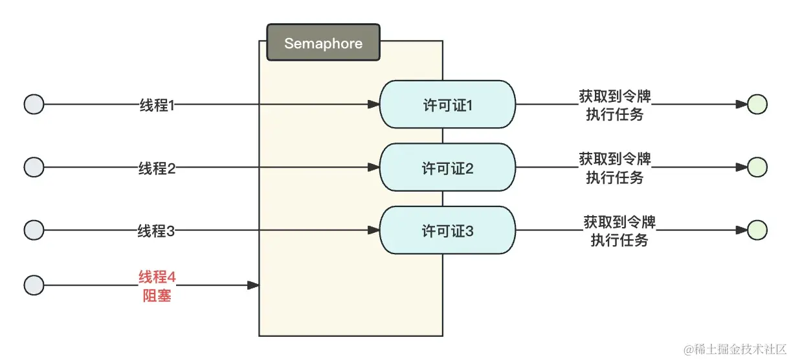

- 01 多线程初阶：解谜多线程世界.md.html
- 02 线程池掌故：管理并发的秘籍.md.html
- 03 锁的奥秘：synchronized 的秘密.md.html
- 04 锁的奥秘：Lock 接口的秘密.md.html
- 05 控制并发流程，并发的巧妙编织.md.html
- 06 ThreadLocal 之珍宝：线程的隐秘宝库.md.html
- 07 CAS：比肩而立的原子魔法.md.html
- 08 容器的魔力：并发世界的宝库.md.html
- 09 结果如何？线程的秘密告白.md.html
- 10 AQS：保证并发安全的终极奥秘（上）.md.html
- 11 AQS：保证并发安全的终极奥秘（中）.md.html
- 12 AQS：保证并发安全的终极奥秘（下）.md.html
- 捐赠
05 控制并发流程，并发的巧妙编织
在本章节，我们将深入学习线程的并发流程控制，这是一个非常重要的主题。这些概念的关键作用在于协调和管理线程之间的执行，以实现更有效地控制并发流程。通过掌握这一章节的内容，我们将能够在未来的开发工作中更加灵活地安排线程的执行顺序，从而更好地掌握并发编程的技巧。
控制并发流程的重要性在于它有助于开发人员更容易地让线程之间协作，以满足业务逻辑的要求。在本章节中，我们将介绍四个重要的类，它们分别是：CountDownLatch、CyclicBarrier、Semaphore和Condition。
这些类提供了不同的机制和工具，以满足不同的并发编程需求。例如，CountDownLatch用于等待一组线程完成特定任务，CyclicBarrier用于等待一组线程达到某个同步点，Semaphore用于控制同时访问共享资源的线程数量，Condition用于在锁的基础上实现更复杂的线程协作。
通过深入了解这些类的使用方式，能够帮助你更好地应对并发编程中的各种挑战。
一、CountDownLatch
CountDownLatch 在中文里面有“倒计时”的意思，它允许一个或多个线程等待一组操作完成后再继续执行。它的名字暗示着一个 计数器，它被初始化为一个正整数，当计数器的值达到零时，等待的线程可以继续执行。
它在多线程编程中非常有用，特别是在协调多个线程完成某项任务时。一些常见的应用场景包括：等待线程池中的所有任务完成、多个线程协作执行某个操作、等待多个服务初始化完成等。
我们在学习它之前先了解一下它主要的 API。
1. 主要 API
构造方法：
CountDownLatch COUNT_DOWN_LATCH = new CountDownLatch(5);
上面代码构造函数中，传递的数值就是计数器的总数量。
- await 方法。每一个 CountDownLatch 内部都会维护一个计数器，当线程调用该方法后，线程会立即处于阻塞状态；直至 CountDownLatch 的计数器数量变为 0 后，才会继续执行。
- await(long timeout, TimeUnit unit)。它的具体含义与 await 类似，但是它存在一个超时时间，当到达超时时间后，无论 CountDownLatch 是否变为 0，该方法都会跳出阻塞，继续向下执行。
注意：这个 await 方法跳出阻塞的条件有三个。
- CountDownLatch 的计数变为 0。
- 设置了超时时间，且到达了超时时间，此时 await 会跳出循环，这里它不会存在任何异常。
- 线程被中断，此时 await 同样会跳出等待，并抛出异常：
InterruptedException。
- countDown 方法。它的逻辑是对
CountDownLatch中计数器的数量减 1，countDown 通常与 await 配合使用，以达到线程编排的目的。 - getCount。获取当前
CountDownLatch的剩余次数，当CountDownLatch的次数变成 0 的时候，再次调用 countDown 也依旧是 0，不会变成负数。
2. 基础使用
学习了它的基础 API 的使用之后，这里我们学习一下它的基础使用。
为了加深你的印象，我们设想这样一种场景：
现在公司有一个需求，需要 4 名程序员在获取到产品经理的原型和 PRD 后才能开始开发，开发完成后开始安排 1 名运维上线。
我们分析下这个需求：
- 4 个开发等 1 个产品经理的原型和 PRD，“多等一”的场景。
- 1 个运维等待 4 个人开发完毕后上线，“一等多”的场景。
需求分析完了，我们开始根据上面的需求开发代码：
public class DevelopCountDownLatchTest {
private final static ThreadPoolExecutor EXECUTOR = new ThreadPoolExecutor(10, 20, 60, TimeUnit.SECONDS, new ArrayBlockingQueue<>(100), Executors.defaultThreadFactory(), new ThreadPoolExecutor.AbortPolicy());
/**
* 产品经理的工作进度
*/
protected final static CountDownLatch DEMAND_COUNT = new CountDownLatch(1);
/**
* 开发人员进度的计数器
*/
protected final static CountDownLatch DEVELOP_COUNT = new CountDownLatch(4);
public static void main(String[] args) throws Exception {
EXECUTOR.execute(new ProjectDevelop("java小红"));
EXECUTOR.execute(new ProjectDevelop("java小绿"));
EXECUTOR.execute(new ProjectDevelop("java小蓝"));
EXECUTOR.execute(new ProjectDevelop("java小紫"));
EXECUTOR.execute(new ProjectDemandPrd("需求小王"));
EXECUTOR.execute(new OperationUp("运维奇奇"));
}
/**
* 运维上线的任务
*/
private static class OperationUp implements Runnable {
private final String name;
private OperationUp(String name) {
this.name = name;
}
@Override
public void run() {
try {
System.out.println(name + "正在等待开发完成...");
//运维开始等待项目开发完毕上线
DEVELOP_COUNT.await();
System.out.println("项目开发完毕，运维" + name + "开始上线.");
System.out.println("上线成功..");
} catch (Exception e) {
e.printStackTrace();
}
}
}
/**
* 需求设计PRD原型的任务
*/
private static class ProjectDemandPrd implements Runnable {
private final String name;
private ProjectDemandPrd(String name) {
this.name = name;
}
@Override
public void run() {
try {
System.out.println(name + "产品经理此时正在紧张的设计原型和PRD.....");
TimeUnit.SECONDS.sleep(3);
System.out.println(name + "原型设计完毕.");
} catch (InterruptedException e) {
e.printStackTrace();
} finally {
DEMAND_COUNT.countDown();
}
}
}
/**
* 开发们开发代码的任务
*/
private static class ProjectDevelop implements Runnable {
private final String name;
private ProjectDevelop(String name) {
this.name = name;
}
@Override
public void run() {
try {
System.out.println(name + "正在等待产品经理的原型和PRD...");
DEMAND_COUNT.await();
System.out.println(name + "获取到了原型和PRD，开始开发.");
Thread.sleep((long) (Math.random() * 10000));
System.out.println(name + "开发完毕.");
} catch (InterruptedException e) {
e.printStackTrace();
} finally {
DEVELOP_COUNT.countDown();
}
}
}
}
我们看最终的结果：
java小红正在等待产品经理的原型和PRD...
java小绿正在等待产品经理的原型和PRD...
java小蓝正在等待产品经理的原型和PRD...
java小紫正在等待产品经理的原型和PRD...
需求小王产品经理此时正在紧张的设计原型和PRD.....
运维奇奇正在等待开发完成...
需求小王原型设计完毕.
java小红获取到了原型和PRD，开始开发.
java小紫获取到了原型和PRD，开始开发.
java小蓝获取到了原型和PRD，开始开发.
java小绿获取到了原型和PRD，开始开发.
java小紫开发完毕.
java小蓝开发完毕.
java小红开发完毕.
java小绿开发完毕.
项目开发完毕，运维运维奇奇开始上线.
上线成功..
任务被编排的与我们的预期相同。
在实际的应用场景中，我们还可以使用 CountDownLath 做一些简单的压力测试，比如我们准备 100 个线程，让它们同时处于 await 状态，在所有的线程全部准备好之后，再统一地使用 countDown 放行。这也是典型的“多等一”的场景。
注意：如果使用await等待锁，则必须保证countDown能够被正常的执行，因为正常情况下，CountDownLath 不会自动释放，否则会出现服务卡死的问题，就像案例中将 countDown 放在 finally 中以保证它能够被百分之百执行。
二、CyclicBarrier
CyclicBarrier 和 CountDownLath 的功能有相似之处，它们都用于协调一组线程的执行，等待线程计数器递减至 0 后再执行后续操作。
不同于 CountDownLatch，CyclicBarrier 在所有线程完成计算任务（计数器归零）时，会触发内部的回调函数执行额外的操作。CyclicBarrier 是一个强大的工具，适用于需要多个线程在不同阶段协同工作的情况，并提供了内部回调功能来执行额外操作，以实现更高级的并发编程控制。
CountDownLatch 一旦计数器减为零，就无法再次使用，适用于一次性的等待任务。计数器归零后，无法重置或重新使用。相比之下，CyclicBarrier 更具灵活性。当 CyclicBarrier 的计数器归零时，你可以通过reset()方法重新设置计数器，使其可以在后续的同步点中再次使用。
同样，我们在学习 CyclicBarrier 之前，先对它的主要 API 进行学习。
1. 主要 API
- await 方法。CyclicBarrier 中的 await 与 CountDownLatch 的并不一致，CyclicBarrier 没有类似于 countDown 的方法，CyclicBarrier 的 await 方法你可以近似认为它是 CountDownLatch 中 await 和 countDown 的组合。当调用 CyclicBarrier 的 await 方法后，它会阻塞，且将计数器 -1，如果计数器变为 0 后，则跳出等待。不需要显式地减少计数器。
- await(long timeout, TimeUnit unit)。该方法在阻塞一段指定的时间后，如果等待的线程未能在超时时间内到达同步点，将抛出
TimeoutException异常。值得注意的是，若其中一个线程在等待过程中抛出了TimeoutException异常，这将引起其他所有线程在调用 await 时抛出BrokenBarrierException异常。此时，CyclicBarrier 进入不可用状态，必须调用reset方法对其进行重置，方可继续使用。这种机制确保在超时或异常情况下，程序能够及时恢复到正常的同步状态。 - getParties。获取栅栏的总数量，也就是预设的初始值。比如构造函数中设置了 5，这里返回的就是 5。
- getNumberWaiting。获取目前处于等待的任务数量。
- isBroken。当 CyclicBarrier 处于不可用状态的时候，该值返回为 true。
- reset。重置该栅栏的状态。当调用 reset 方法时，会将屏障的计数器重置为初始值，并且任何当前在屏障上等待的线程都将立即被中断，并抛出
BrokenBarrierException异常。这样 CyclicBarrier 就可以重新进入可用状态，允许后续的线程再次使用它进行同步。
2. 基础使用
在学习了基础的 API 之后，我们接着开始学习它的基础使用。
对于 CyclicBarrier 而言，它存在两种定义方式。
- 不携带回调的定义方式：
CyclicBarrier barrier = new CyclicBarrier(2);
- 携带回调的定义方式：
CyclicBarrier barrier = new CyclicBarrier(2, new Runnable() {
@Override
public void run() {
System.out.println("栅栏已经被全部释放");
}
});
回调的意义是：当所有线程调用 await 的数量达到了 CyclicBarrier 设置的阈值的时候，会优先触发该回调后再向下执行各自的回调，后面我会给详细的案例演示。
我们先举一个简单的例子，来初步学习它的使用。
假设今天是周六，公司要求今天统一去公司集合，然后人到齐之后一起坐车去团建！！！要求所有员工必须先全部到公司集合，人到齐后再一块儿去目的地团建。
public class DineTest {
private final static ThreadPoolExecutor EXECUTOR = new ThreadPoolExecutor(10, 20, 60, TimeUnit.SECONDS, new ArrayBlockingQueue<>(100), Executors.defaultThreadFactory(), new ThreadPoolExecutor.AbortPolicy());
/**
* 小伙伴
*/
private static final CyclicBarrier BUDDY_CUNT = new CyclicBarrier(4, new Runnable() {
@Override
public void run() {
System.out.println("人都到齐了，出发去团建;每一个人都很开心，脸上挂着幸福的笑容.");
System.out.println("公司班车开始发往目的地...");
try {
Thread.sleep((long) (Math.random() * 10000));
} catch (InterruptedException e) {
e.printStackTrace();
}
System.out.println("两个小时后...");
}
});
public static void main(String[] args) {
EXECUTOR.execute(new EmployeeAct("打工人1号"));
EXECUTOR.execute(new EmployeeAct("打工人2号"));
EXECUTOR.execute(new EmployeeAct("打工人3号"));
EXECUTOR.execute(new EmployeeAct("打工人4号"));
}
/**
* 公司任务
*/
private static class EmployeeAct implements Runnable {
private final String name;
private EmployeeAct(String name) {
this.name = name;
}
@Override
public void run() {
try {
System.out.println(name + "出发前往公司.");
Thread.sleep((long) (Math.random() * 10000));
System.out.println(name + "到达公司");
BUDDY_CUNT.await();
System.out.println(name + "经过2个小时的车程，到达了目的地");
} catch (Exception e) {
e.printStackTrace();
}
}
}
}
我们查看一下它的执行结果：
打工人2号出发前往公司.
打工人4号出发前往公司.
打工人3号出发前往公司.
打工人1号出发前往公司.
打工人2号到达公司
打工人1号到达公司
打工人3号到达公司
打工人4号到达公司
人都到齐了，出发去团建;每一个人都很开心，脸上挂着幸福的笑容.
公司班车开始发往目的地...
两个小时后...
打工人4号经过2个小时的车程，到达了目的地
打工人2号经过2个小时的车程，到达了目的地
打工人1号经过2个小时的车程，到达了目的地
打工人3号经过2个小时的车程，到达了目的地
从上面的例子我们可以简单了解到，回调的执行时机是 CyclicBarrier 计数器归 0 之后，回调执行完毕后，才会执行 await 方法后面的动作。
假设我们有一个更为复杂的场景，我们采用它的回调功能将所有的步骤都编织起来执行：
现在公司有一个需求，需要 4 名程序员在获取到产品经理的原型和 PRD 后才能开始开发，开发完成需要 1 名测试完成常规的测试后再安排 1 名运维上线服务。
我们具体分析下这个需求：
与CountDownLatch那个需求不同的是，我们在开发完成后需要测试人员先进行测试，提测完成之后才能进行上线。我们采用 CyclicBarrier 需要将每一步任务都当作上一个任务完成的回调，从而将所有任务关联起来！
具体细节我们可以看代码：
public class DevelopAndTestCountDownLatchTest {
private final static ThreadPoolExecutor EXECUTOR = new ThreadPoolExecutor(10, 20, 60, TimeUnit.SECONDS, new ArrayBlockingQueue<>(100), Executors.defaultThreadFactory(), new ThreadPoolExecutor.AbortPolicy());
/**
* 产品经理
*/
private static final CyclicBarrier PRD_COUNT = new CyclicBarrier(1, new StartDevelop());
/**
* 开发人员
*/
private static final CyclicBarrier DEVELOP_COUNT = new CyclicBarrier(4, new TestCode());
/**
* 测试人员
*/
private static final CyclicBarrier TEST_COUNT = new CyclicBarrier(1, new OperationTopLineCode());
public static void main(String[] args) throws BrokenBarrierException, InterruptedException {
System.out.println("产品经理此时正在紧张的设计原型和PRD.....");
TimeUnit.SECONDS.sleep(3);
System.out.println("原型设计完毕.");
PRD_COUNT.await();
}
/**
* 产品经理资料准备齐全后的回调
*/
private static class StartDevelop implements Runnable {
@Override
public void run() {
EXECUTOR.execute(new DevelopCode("java小红"));
EXECUTOR.execute(new DevelopCode("java小绿"));
EXECUTOR.execute(new DevelopCode("java小蓝"));
EXECUTOR.execute(new DevelopCode("java小紫"));
}
}
/**
* 开发人员开始进行开发代码
*/
private static class DevelopCode implements Runnable {
private final String name;
private DevelopCode(String name) {
this.name = name;
}
@Override
public void run() {
try {
System.out.println(name + "开始开发代码.......");
Thread.sleep((long) (Math.random() * 10000));
System.out.println(name + "完成了代码开发！");
//等待其他人完成开发
DEVELOP_COUNT.await();
} catch (Exception e) {
e.printStackTrace();
}
}
}
/**
* 测试人员的测试任务
*/
private static class TestCode implements Runnable {
@Override
public void run() {
try {
System.out.println("开发人员全部都开发完成了，测试人员开始测试.");
Thread.sleep((long) (Math.random() * 10000));
System.out.println("测试人员完成测试，服务没有问题，可以准备上线了.");
TEST_COUNT.await();
} catch (Exception e) {
e.printStackTrace();
}
}
}
/**
* 运维上线代码
*/
private static class OperationTopLineCode implements Runnable{
@Override
public void run() {
try {
System.out.println("检测到测试完成，运维开始上线代码");
Thread.sleep((long) (Math.random() * 10000));
System.out.println("上线完成");
//上线完成后关闭线程池
EXECUTOR.shutdown();
} catch (Exception e) {
e.printStackTrace();
}
}
}
}
执行结果如下：
产品经理此时正在紧张的设计原型和PRD.....
原型设计完毕.
java小红开始开发代码.......
java小绿开始开发代码.......
java小蓝开始开发代码.......
java小紫开始开发代码.......
java小红完成了代码开发！
java小绿完成了代码开发！
java小紫完成了代码开发！
java小蓝完成了代码开发！
开发人员全部都开发完成了，测试人员开始测试.
测试人员完成测试，服务没有问题，可以准备上线了.
检测到测试完成，运维开始上线代码
上线完成
在上面的例子中，我们将开发人员开始开发代码的时机当作了 PRD 设计完成时的回调，将测试测试代码当作了开发完成开发的回调，将运维上线当作了测试完毕的回调，进而将所有的任务关联了起来，完成了需求！
三、Semaphore
Semaphore（信号量）是一个用于控制并发访问资源的同步工具，它允许多个线程在同一时刻访问共享资源，但限制了可以同时访问资源的线程数量。
Semaphore维护一个计数器，该计数器表示可用的许可证数量，线程在访问资源前必须先获取许可证。如果许可证数量耗尽，后续的线程必须等待其他线程释放许可证，以便获得访问权。
我们可以近似地将 Semaphore 理解为是一个 令牌桶，它可以规定同时能有多少线程访问资源，只有在令牌桶内申请到令牌的人才可以访问资源。
Semaphore提供了两个主要操作：
acquire()：当一个线程想要获得一个许可证时，它可以调用acquire()方法。如果许可证可用，线程将获得许可证并继续执行。如果许可证不可用，线程将被阻塞，直到有许可证可用为止。release()：当一个线程完成对资源的访问后，它应该调用release()方法来释放许可证，使其他线程可以获得访问权。
Semaphore可以初始化为指定的许可证数量，通常用于控制并发资源的访问。这使得开发人员能够更好地管理并发访问，避免资源争夺和竞争条件。

我们先介绍一下它的主要的 API。
1. 主要 API 介绍
- acquire 方法。获取一个许可证，获取不到就阻塞等待。它可以被中断，并抛出 InterruptedException 异常。
- acquire(int permits)。与 acquire 类似，但是它可以一次获取 permits 个许可证。
- tryAcquire()。它会尝试获取一个许可证，如果许可证可用，它会立即获取许可证并返回
true，表示成功获取；如果许可证不可用，tryAcquire()方法会立即返回false，而不会阻塞线程。线程可以根据返回值来判断是否成功获取许可证。 - tryAcquire(int permits)。尝试获取 permits 个许可证，获取到返回 true，获取不到返回 false。
- tryAcquire(int timout, TimeUnit unit)。等待一段时间获取一个许可证，如果获取到了就返回 true，获取不到就返回 false。
- tryAcquire(int permits, int timout, TimeUnit unit)。等待一段时间获取 permits 个许可证，如果获取到了就返回 true，获取不到就返回 false。
- acquireUninterruptibly。阻塞式获取一个许可证，不可被中断。
- acquireUninterruptibly(int permits)。阻塞式获取 permits 个许可证，不可被中断。
- availablePermits。返回当前可用的许可的数量。
- getQueueLength。返回处于等待令牌状态的线程的数量。注意这个数量只是一个估计值，因为线程数一直在变。
- hasQueuedThreads。队列中是否存在等待的线程数。
- isFair。是不是公平锁。
- release。归还一个令牌到令牌桶。
- release(int permits)。归还 permits 个令牌到令牌桶。
2. 基础使用
假设我们现在有一个任务，它在执行的时候消耗的系统资源比较大，我们的服务器经过测试一次最多执行两个任务：
public class SemaphoreTest {
private final static ThreadPoolExecutor EXECUTOR = new ThreadPoolExecutor(10, 20, 60, TimeUnit.SECONDS, new ArrayBlockingQueue<>(100), Executors.defaultThreadFactory(), new ThreadPoolExecutor.AbortPolicy());
/**
* 同时只能存在两个令牌
*/
private static final Semaphore SEMAPHORE = new Semaphore(2, true);
public static void main(String[] args) throws Exception {
for (int i = 0; i < 5; i++) {
EXECUTOR.execute(new Task());
}
}
private static class Task implements Runnable {
@Override
public void run() {
try {
//申请许可证
SEMAPHORE.acquire();
System.out.println(Thread.currentThread().getName() + "获取到了许可证，开始运行. ");
Thread.sleep((long) (Math.random() * 10000));
System.out.println(Thread.currentThread().getName() + "运行结束. ");
} catch (InterruptedException e) {
e.printStackTrace();
}finally {
//释放许可证
SEMAPHORE.release();
}
}
}
}
当需要对线程访问资源的并发数量和速率进行精确控制时，Semaphore提供了一种有效的解决方案。在实际应用场景中，我们可以将Semaphore用于实现令牌桶算法，确保请求只有在成功获取令牌的情况下才能被转发到服务上。这种方式不仅有效地控制了并发访问速率，还可以防止资源的过度消耗，保护服务的稳定性和可用性。
Semaphore作为一个强大的工具，使我们能够在复杂的网络环境中实现精细的流量控制，从而更好地满足各种应用的需求。
四、Condition
我们在学习 ReentrantLock 的时候并未提起 Condition，主要是我想放在这一章节中讲会更加的合适。
Condition是 Java 并发编程中的一种重要工具，通常与 ReentrantLock 或 ReentrantReadWriteLock 配合使用，用于管理线程的等待和通知机制。Condition允许线程在满足特定条件之前等待，以实现更复杂的同步控制。
Condition的主要特点和用途包括：
- 等待和通知：
Condition允许线程在等待某个条件变为真之前暂停执行（等待状态），并在条件满足时恢复执行（通知状态）。这有助于线程之间的协调和同步。 - 多条件：一个
ReentrantLock可以关联多个Condition，每个Condition可以表示不同的等待和通知条件。这使得更复杂的同步控制可以更容易地实现。 - 灵活的等待/通知机制：与传统的
wait()和notify()方法相比，Condition提供了更灵活的等待和通知机制，可以在不同条件下等待或通知线程，而不会导致竞态条件或死锁。 - 精确的控制：
Condition允许开发人员在特定条件下等待，以避免不必要的等待和提高性能。
它的创建主要依托于 ReetrantLock 或者 ReentrantReadWriteLock。我们以 ReentrantLock 为例，创建方式如下：
private final static ReentrantLock LOCK = new ReentrantLock();
/**
* 创建等待条件
*/
private final static Condition CONDITION = LOCK.newCondition();
我们还是老方式，先介绍它的主要 API。
1. 主要 API
- await。暂停线程的执行，并将锁交出去，等待其他线程唤醒。注意它可以被中断，并抛出异常 InterruptedException！而且它必须在
LOCK.lock();加锁块中使用，否则会抛出IllegalMonitorStateException异常。 - await(int timeout, TimeUnit unit)。暂停指定时间的线程，如果到达时间仍没有被通知唤醒，那么会自己跳出阻塞，继续向下执行！其余与 await 一致。
- awaitNanos(long nanos)。以纳秒为单位设置等待时间，如果到达时间仍没有被通知唤醒，那么会自己跳出阻塞，继续向下执行！其余与 await 一致。
- awaitUninterruptibly。不可被中断的锁，其余与 await 一致。
- awaitUntil(Date date)。不可被中断的锁，其余与 await 一致。可以设置过期时间。过期时间以 Date 为单位！
- signal()。公平锁的情况下，唤醒一个等待时间最长的线程。非公平锁的情况下，不会遵循先进先出的唤醒顺序。非公平锁更加倾向于允许刚刚阻塞的线程立即获得锁，而不考虑等待时间的长短。
- signalAll()。唤醒所有当前条件关联的线程。
2. 基础使用
我们模拟这样一种使用场景：假设有一个停车场，该停车场有 4 个停车位。车辆可以进入到停车场停车，如果当前停车位已满，车辆就需要等待停车位。
代码如下：
public class ParkingLot {
private final static ThreadPoolExecutor EXECUTOR = new ThreadPoolExecutor(10, 20, 60, TimeUnit.SECONDS, new ArrayBlockingQueue<>(100), Executors.defaultThreadFactory(), new ThreadPoolExecutor.AbortPolicy());
private final static ReentrantLock LOCK = new ReentrantLock();
private final static Condition CONDITION = LOCK.newCondition();
/**
* 停车场总位置数量
*/
private final int totalParkingSpaces;
/**
* 已经停了多少量
*/
private int occupiedSpaces = 0;
public ParkingLot(int totalParkingSpaces) {
this.totalParkingSpaces = totalParkingSpaces;
}
public static void main(String[] args) {
ParkingLot parkingLot = new ParkingLot(5);
for (int i = 0; i < 10; i++) {
EXECUTOR.execute(new CarActive(parkingLot, "车辆"+i));
}
}
/**
* 尝试进入停车场
*/
public void park(String name){
LOCK.lock();
try {
if(occupiedSpaces >= totalParkingSpaces){
// 如果停车场已满，等待
System.out.println(name + ": 车辆等待停车位...");
// 开始等待车位
CONDITION.await();
}
// 有停车位，抢到了 将已经占用的数量+1
occupiedSpaces++;
System.out.println(name + ": 车辆成功停车，剩余的停车位:" + (totalParkingSpaces - occupiedSpaces));
} catch (InterruptedException e) {
e.printStackTrace();
} finally {
LOCK.unlock();
}
}
/**
* 驶离停车场
*/
public void bearOff(String name){
LOCK.lock();
try {
// 离开停车场 将已占用的数量-1
occupiedSpaces--;
System.out.println(name + ": 车辆离开停车场，剩余停车位: " + (totalParkingSpaces - occupiedSpaces));
// 通知等待的车辆有空位了
CONDITION.signal();
}finally {
LOCK.unlock();
}
}
private static class CarActive implements Runnable {
private final ParkingLot parkingLot;
private final String name;
private CarActive(ParkingLot parkingLot, String name) {
this.parkingLot = parkingLot;
this.name = name;
}
@Override
public void run() {
try {
parkingLot.park(name);
Thread.sleep((long) (Math.random() * 10000));
parkingLot.bearOff(name);
} catch (InterruptedException e) {
e.printStackTrace();
}
}
}
}
执行结果如下：
车辆0: 车辆成功停车，剩余的停车位:3
车辆2: 车辆成功停车，剩余的停车位:2
车辆1: 车辆成功停车，剩余的停车位:1
车辆4: 车辆成功停车，剩余的停车位:0
车辆5: 车辆等待停车位...
车辆3: 车辆等待停车位...
车辆4: 车辆离开停车场，剩余停车位: 1
车辆5: 车辆成功停车，剩余的停车位:0
车辆0: 车辆离开停车场，剩余停车位: 1
车辆3: 车辆成功停车，剩余的停车位:0
车辆1: 车辆离开停车场，剩余停车位: 1
车辆3: 车辆离开停车场，剩余停车位: 2
车辆2: 车辆离开停车场，剩余停车位: 3
车辆5: 车辆离开停车场，剩余停车位: 4
注意：Condition 与 ReentrantLock 一定是成对出现的，我上面的代码采用的是 signal 来释放的锁，如果采用 signalAll 那么最终的运行结果就会错误，因为它是唤醒全部线程去停车，那么临界区的已停数量就会计算错误。
五、总结
在本章节中，我们深入讲解了并发编程中的四个重要工具：CountDownLatch、CyclicBarrier、Semaphore 和 Condition，并为每一个工具提供了详细的 API 方法和清晰的用例示例，旨在帮助开发者更好地理解和运用这些关键组件。
这些工具在多线程编程中发挥着重要作用，可协助实现线程之间的协调、资源控制、等待和唤醒操作，从而构建更可靠和高效的并发应用程序。
通过深入理解这些工具的特性和使用方式，开发者能够编写更加健壮和可扩展的多线程代码，提高应用程序的性能和可维护性。这为应对并发编程中的挑战提供了有力的工具和方法。
© 2019 - 2023 Liangliang Lee. Powered by gin and hexo-theme-book.